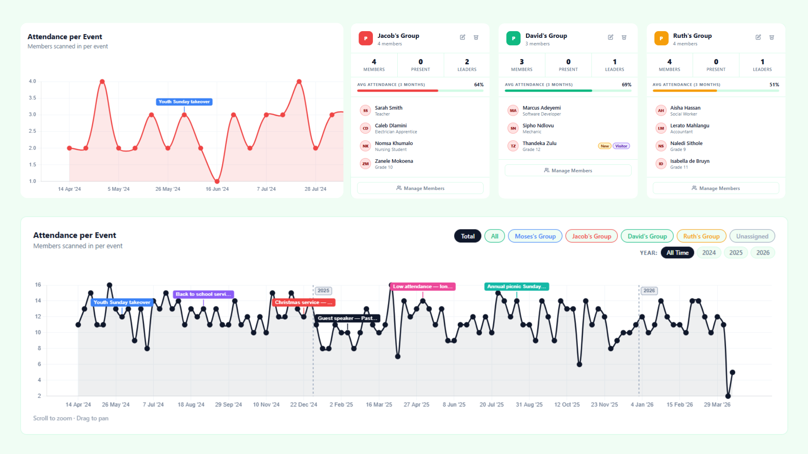
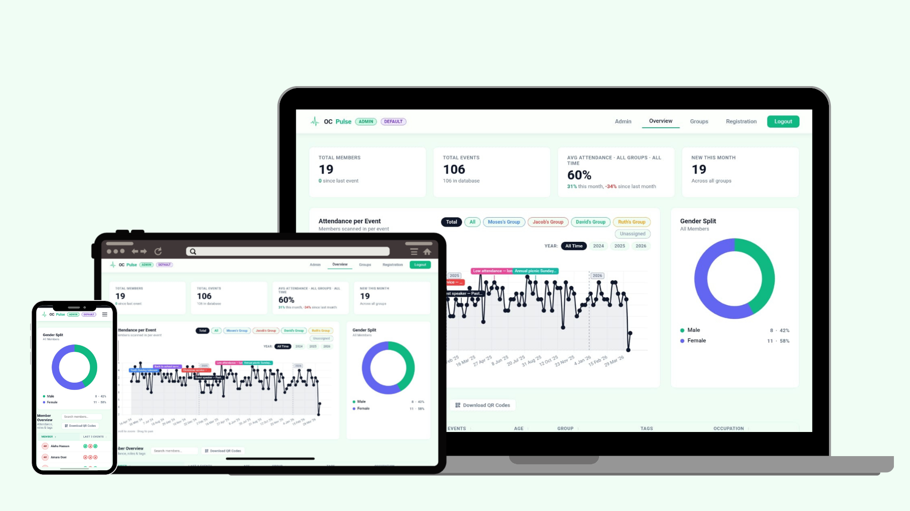
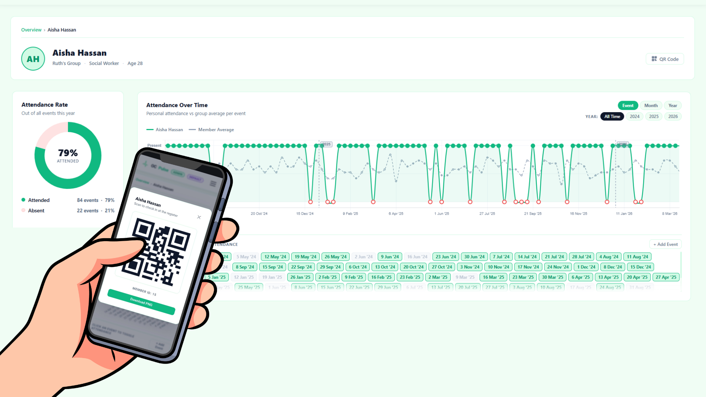

Know Your
Flok. At Every
Turn.
"Be sure you know the condition of your flocks, give careful attention to your herds."
— Proverbs 27:23
01Stewardship Made Clear
Pulse is a Gospel tool created to help church leaders faithfully steward the people entrusted to them. According to Romans 12:8, if you lead, do it with diligence, and Proverbs 27:23 stresses giving careful attention to those in your care. This is at the heart of the Gospel tool Pulse. Get big-picture statistics and live attendance tracking to enable you as a leader to lead with diligence and careful attention. See weekly, monthly, and yearly trends and label them to pray over and consider, to make informed ministry decisions. Be able to place newcomers and monitor your Bible study groups live on the day and much more with this Gospel tool.
Some Insight Features
- View long-term attendance trends and statistics across years, and label key events for reflection and planning.
- Track group attendance and engagement trends over time.
- Monitor live group attendance as members arrive through a simple, real-time interface.
- View average group attendance over the last three months for quick insight.
- Access individual member statistics to better understand engagement patterns.
- Assign tags such as Leader, Setup Crew, or Worship Captain to help structure roles clearly.
- Filter and analyse attendance data by attendance history and patterns.

02Live Statistical Tracking
Once Pulse is live, you can track attendance and statistics in real time across multiple devices. Be able to have multiple phones, tablets, and laptops all connected at once to register, view, and gain insight. Set up different user profile restrictions to protect privacy depending on your needs. This gives you the power to know precisely what the flock is looking like in real time."And discern what shifts you need to make to steward your night with the most care and attention. Flag newcomers and assign them to Bible study groups on the fly.

03QR Attendance System
Ever wanted to streamline your attendance system by assigning unique QR codes to each member so they can simply scan and walk in? Allowing you to focus more on capturing and connecting with newcomers rather than manual check-ins. With OC Pulse, you can do exactly that. Use any device with a camera—whether it’s a webcam, smartphone, laptop, or even a tablet—to scan a member’s QR code and have their attendance instantly recorded in real time. Everything updates immediately, giving you accurate live data without delay or manual admin. It’s simple, fast, and reliable, designed to reduce friction at the door and increase focus on people. Setup is flexible with both bulk QR code generation for entire groups and individual user-specific codes. You can easily print, download, or distribute codes digitally depending on your setup. This system ensures smooth entry flow, reduces admin load, and helps you keep your attention where it matters most—on people, connection, and discipleship.
Built in the open, for the Church.
Pulse is fully open source. Inspect the code, contribute improvements, or fork it to fit your ministry's unique needs. We believe Gospel tools should be transparent, trustworthy, and community-driven.
A real-time group engagement tracker built for churches and small-group ministries. Connect physical buttons, capture live responses, and shepherd your flock with data.
Up and running
in minutes.
Watch the full walkthrough, then follow the steps to launch Pulse for your very first group session.
Download the Installer
Grab the latest version from the button at the top of this page and run the installer on your Windows or Mac machine.
Connect Your Buttons
Plug in your USB response buttons. Pulse auto-detects them and assigns each group a colour instantly.
Configure Your Groups
Name your groups, set session goals, and customise the display to match your ministry's style.
Launch & Engage
Hit start. The live dashboard goes full-screen and your group is ready to respond in real time.
Ministries Currently Using
Objective Calvary: Gospel Tools